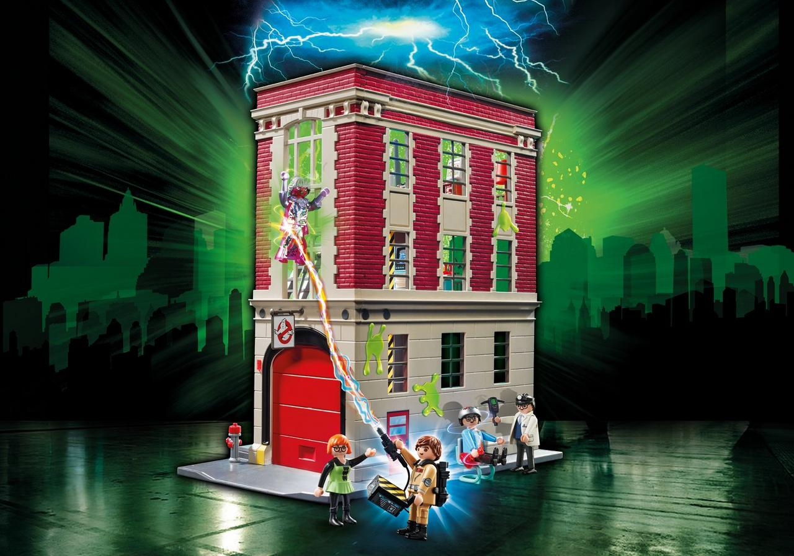
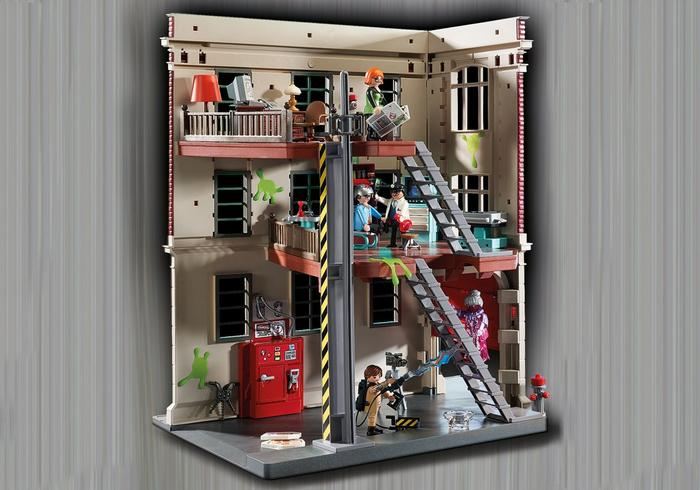
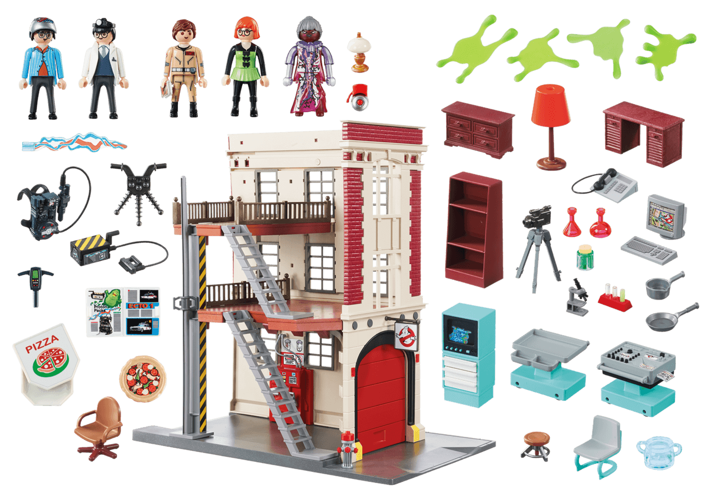

Quartier général Ghostbusters

Description
Amuse toi dans le quartier général Ghostbusters avec les héros : Ray Stantz, Egon Spengler, Janine Melnitz et
Louis Tully ainsi que le fantôme de la bibliothèque et de nombreux accessoires pour chasser les fantômes !
Dimensions
45 x 27,5 x 45,5 cm (LxDxH)
Convient aux enfants de plus de 6 ans.
Dans le pack, tu trouveras :
- - La porte de garage coulissante qui peut être ouverte en la soulevant.
- - Le véhicule d'intervention Ghostbusters Ecto-1 qui se gare dans le parking à l'intérieur du quartier
général.
- - Les fantômes attrapés par les héros Ghostbusters qui peuvent être emprisonnés dans l'unité de confinement
des
fantômes. Pour y placer des fantômes, il suffit d'ouvrir la trappe rouge, glisser le piège à fantôme dans
l'emplacement
prévu et refermer.
- - Avec Ray Stantz en combinaison Ghostbusters, Egon Spengler en blouse de laboratoire, Janine l'assistante
du
savant Louis Tully et Eleanor Twitty, le fantôme de la bibliothèque.
- - Les personnages peuvent être fixés et peuvent descendre le long de la rampe de pompier, pour passer à
l'action aussi
vite que possible.
- - Le laboratoire Ghostbusters avec les équipements, se situe au premier étage.
- - Le bureau de Janine se situe au deuxième étage.
- Autres accessoires : sac à dos Proton Pack et arme à Proton, un piège à fantôme, le détecteur PKE pour
détecter l'énergie paranormale des fantômes et des projections d'Ecto-Plazm qui se fixent sur une paroi lisse.

